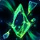
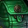
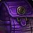
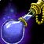
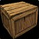
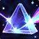

پاداشهای قدرت اندگیم Talebound: وینوماستون، کشهای Mythic و معجونهای Experience
Talebound فقط داستان و پازل نیست؛ با پچ 12.1.7 به منبع جدی قدرت پلیر تبدیل میشود — از وینوماستون و کشهای تجهیزات Heroic و Mythic تا معجونهای Experience، هارتاستون جدید و کمپسایت اختصاصی.
در آخرین بیلد PTR پچ 12.1.7 دستاوردهای تازهای برای Talebound اضافه شده که پاداششان قدرت پلیر در بازی اصلی Retail است؛ بخشی از این پاداشها قبلاً دیتاماین شده بود و حالا منبعشان رسمی و شفاف شده است.

خرید از Travelling Raven در Silvermoon City
بیشتر این پاداشها از Travelling Raven خریداری میشوند؛ رونی که در Silvermoon City ایستاده است. همین که با او صحبت کنید، دستاورد Tapping at the Trader's Door هم نصیبتان میشود.
وینوماستون و کشهای تجهیزات
اگر هنوز وینوماستونهای موردنیاز کاراکترهایتان جمع نشده، چهار دستاورد جداگانه هر کدام ۱۰ وینوماستون از 
- سه دستاورد از Talebound یک Nebulous Voidcache پاداش میدهند.
- هشت دستاورد تجهیزات Venomous Abyss میدهند: یک کش Normal، پنج کش Heroic (
 Cache of Heroic Treasures) و دو کش Mythic (Cache of Mythic Treasures)؛ کش Champion هم Cache of Champion Treasures است.
Cache of Heroic Treasures) و دو کش Mythic (Cache of Mythic Treasures)؛ کش Champion هم Cache of Champion Treasures است. - بونوس کرستها هم فراموش نشود: ۲۰ Champion Crest از
 Champion Mistcrest Pouch، ۴۰ Hero Crest از
Champion Mistcrest Pouch، ۴۰ Hero Crest از 
Hero Mistcrest Pouch و ۴۰ Myth Crest از
Myth Mistcrest Pouch به دست میآید.
چهار دستاورد وینوماستون روی چهار داستان مختلف سوارند؛ با تمومکردن هر داستان روی یک آلت دیگر، عملاً ۱۰ وینوماستون اضافه هر بار جمع میکنید.
جمعکردنیها: هارتاستون، اسباببازی و کمپسایت
در کنار قدرت پلیر، آیتمهای کلکسیونی هم دارند: هارتاستون جدید  Wood-Cursed Hearthstone با دستاورد The Tale Complete میآید و اسباببازی The Fate of Quillgrave پاداش دستاورد The Final Confrontation است؛ بهعلاوه یک Campsite کاملاً جدید. اسباببازی
Wood-Cursed Hearthstone با دستاورد The Tale Complete میآید و اسباببازی The Fate of Quillgrave پاداش دستاورد The Final Confrontation است؛ بهعلاوه یک Campsite کاملاً جدید. اسباببازی  Hexed Tiny Tome هم که قبلاً گزارشش را خواندهاید، از همینجاست.
Hexed Tiny Tome هم که قبلاً گزارشش را خواندهاید، از همینجاست.
چهار معجون ۱۰٪ Experience
هر وقت پازلهای یک داستان را کامل حل کنید، یک معجون ۱۰ درصد Experience دو ساعته میگیرید. چهار داستان یعنی چهار معجون: 
مواد پروفیشن و پریزم مارل
دو دستاورد هم جعبهٔ مواد پروفیشن میدهند:   Packed Alchemy Crate پاداش The Arcanist's Account Complete و
Packed Alchemy Crate پاداش The Arcanist's Account Complete و